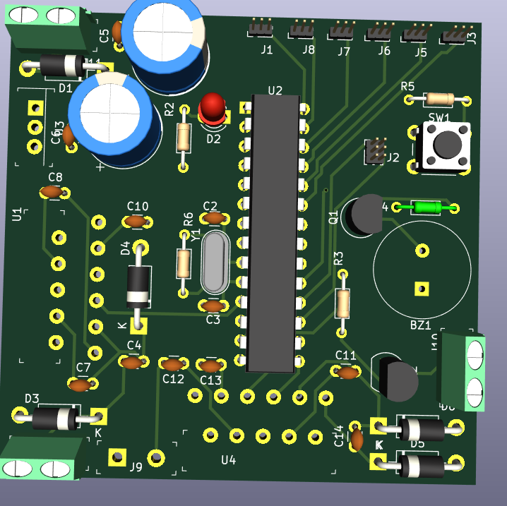

An all-in-one control PCB for the Tweenbot robot, integrating microcontroller, L298N motor driver, and power regulation on a single board.

The Tweenbot PCB was designed to provide a compact, efficient, and reliable control board for a small autonomous robot platform. It integrates the microcontroller, motor driver, and power management circuits into a single board, reducing wiring complexity and improving mechanical stability.
The ATmega328P handles robot navigation and control logic, interfacing with ultrasonic and IR sensors for obstacle detection. The L298N driver controls two DC motors, enabling forward, reverse, and turning motions. The board includes power regulation to ensure stable operation for logic (5V) and motor power (up to 12V).
The PCB was designed in KiCad with attention to proper motor current trace widths and separation of high-current and logic grounds. Flyback diodes were placed near the L298N outputs to protect against voltage spikes, and mounting holes were added for chassis integration.
Basic differential motor control example:
// Motor control example digitalWrite(MOTOR_LEFT_FORWARD, HIGH); digitalWrite(MOTOR_LEFT_BACKWARD, LOW); digitalWrite(MOTOR_RIGHT_FORWARD, HIGH); digitalWrite(MOTOR_RIGHT_BACKWARD, LOW);
The PCB was assembled and tested with the Tweenbot chassis. All motors responded correctly to control signals, and sensor readings were stable. The board demonstrated reliable operation with minimal noise interference.
The custom PCB for Tweenbot significantly reduced wiring complexity and improved performance stability. Its modular design allows for future expansions, such as wireless control modules or additional sensors.